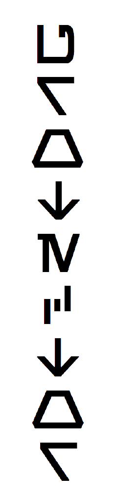
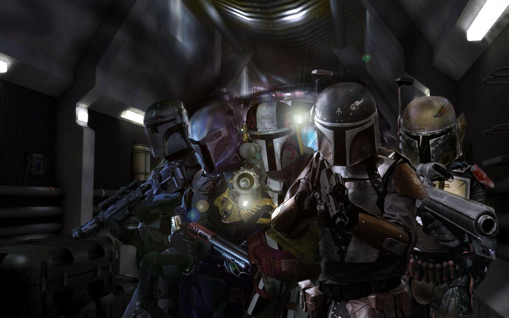
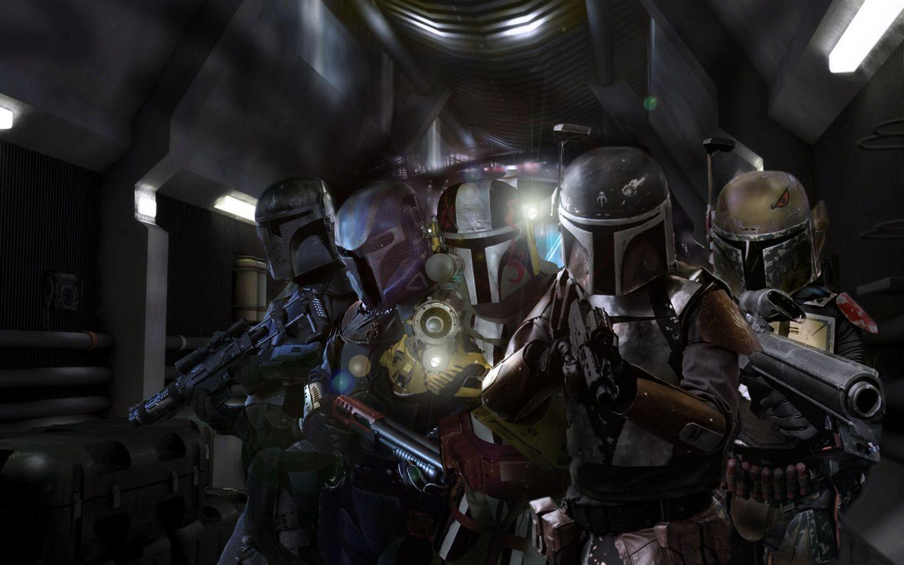

Clone
Les soldats clones (Clone Troopers en version originale) ou simplement désignés comme les clones, sont des personnages de Star Wars. Ils sont au service de la République galactique durant ses dernières années et servent notamment lors de la Guerre des clones, débutant 22 ans avant la bataille de Yavin et se terminant 19 ans avant cette dernière, lors de la proclamation de l'Empire galactique. Ils sont physiquement identiques et possèdent les mêmes capacités d'endurance et de réflexion. Ils ont été fabriqués dans la ville de Tipoca City sur la planète Kamino. Leurs gènes ont été modifiés à partir de celui du chasseur de primes Jango Fett. Leur croissance est également accélérée pour qu’ils grandissent deux fois plus vite que la normale. Ils sont éduqués et entraînés uniquement à l'usage militaire. Ils apparaissent dans plusieurs films et séries télévisées, leur première apparition s'effectue en 2002 dans L'Attaque des clones, puis dans La Revanche des Sith en 2005. Ils deviennent ensuite les principaux personnages du film d'animation The Clone Wars en 2008, et de sa série télévisée éponyme. Ils intègrent ensuite la série Rebels. En 2018, il est confirmé que l'un d'eux, Rex, participe à la bataille d'Endor visible dans Le Retour du Jedi. Le maître Jedi Sifo-Dyas est allé en secret sur Kamino afin de commander une armée de clones pour le compte de la République galactique. Il est assassiné peu après par Dark Tyranus qui avait découvert ses plans. Les Kaminoens engagent le chasseur de prime Jango Fett pour servir de modèle aux soldats clones. Une dizaine d'années après, la fin de la guerre semble proche, mais les clones sont toujours déployés un peu partout dans la Galaxie, et les séparatistes parviennent à lancer un assaut sur Coruscant durant lequel ils enlèvent le chancelier suprême Palpatine. Ce dernier est tout de même récupéré à l'issue de la bataille, mais le général Grievous s'échappe et se réfugie avec les autres leaders séparatistes sur Utapau. Le maître Jedi Obi-Wan Kenobi y est envoyé avec un bataillon de clones sous les ordres du commandant Cody. Yoda est lui envoyé sur Kashyyyk avec les clones du commandant Gree afin de repousser une invasion droïde.Sur Coruscant, le chancelier Palpatine avec l'aide de son nouvel apprenti Dark Vador, ordonne à tous les clones de toute la Galaxie, d’exécuter l'Ordre 66. Tous les soldats clones se retournent contre les Jedi, et les exterminent. Le commandant Bacara tue Ki-Adi-Mundi sur Mygeeto, le commandant Bly s'occupe d'Aayla Secura sur Felucia, et le commandant Neyo de Stass Allie sur Saleucami. Les commandants Gree et Cody échouent à tuer leurs maîtres Jedi, respectivement Yoda et Obi-Wan Kenobi, le premier étant même décapité par le Jedi.Le capitaine Rex se trouvait sur Mandalore avec Ahsoka Tano à la recherche de Dark Maul lorsqu'on lui ordonne d’exécuter l'Ordre 66 sur leur retour. Après divers aventures l'ex-jedi retire à Rex sa puce inhubitrice, et s'échappent ensemble après avoir simulé leur mort, puis se séparent, estimant qu'il est trop dangereux pour eux de rester ensemble.

 
